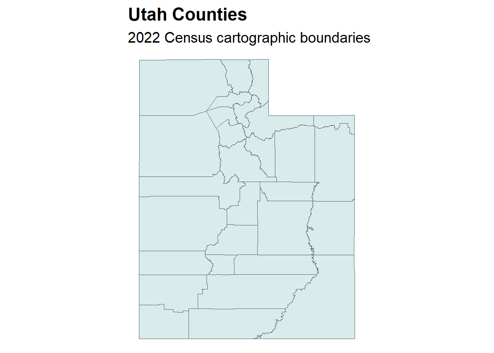
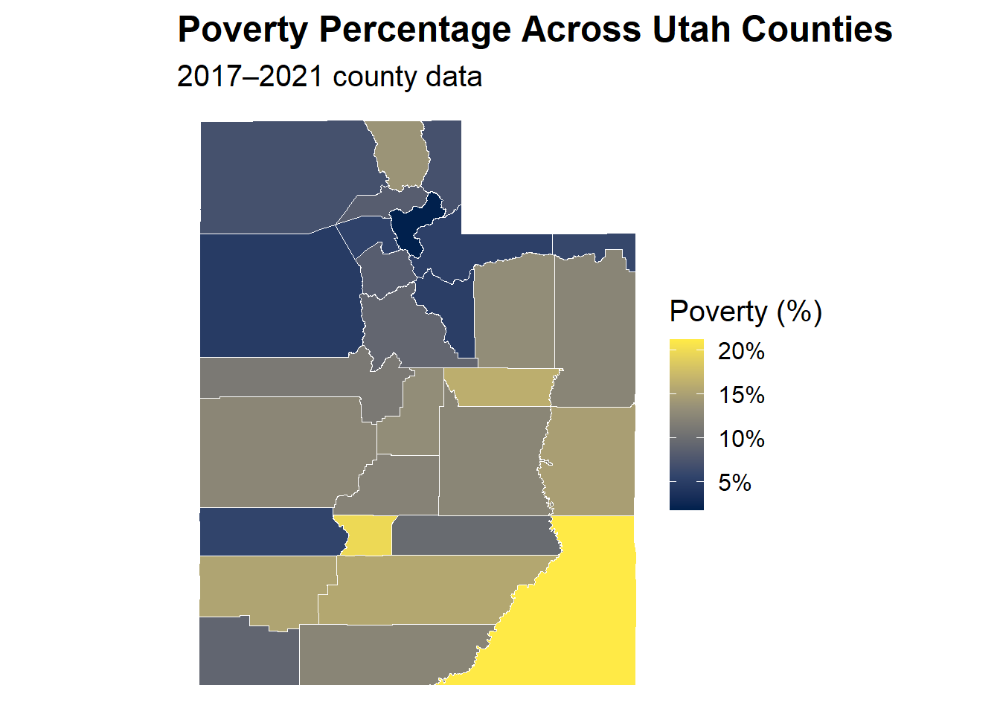
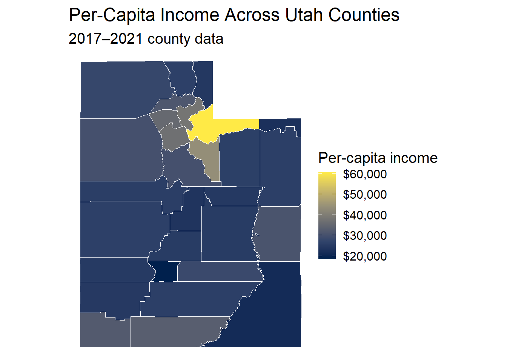
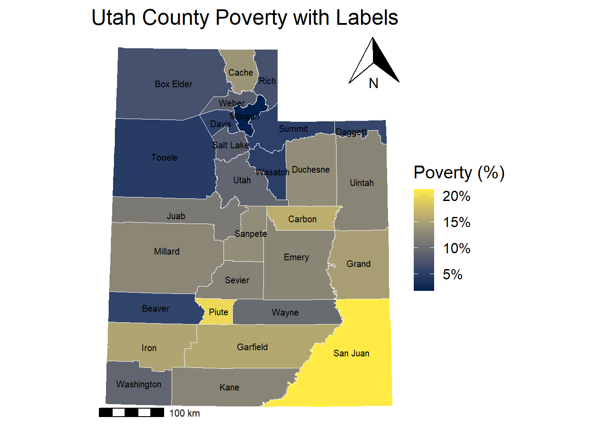
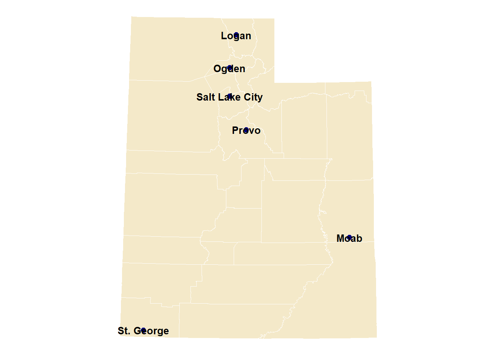

install.packages(c("sf", "tigris", "ggspatial"))18 Mapping Public Health Data in R
Placing health on the map
SPATIAL DATA · CHOROPLETH MAPS · US CENSUS
Putting Public Health on the Map
Where people live matters for understanding population health. Learn to retrieve shapefiles, connect them to Census estimates, and communicate geographic patterns through reproducible maps in R.
NoteLearning objectives
By the end of this lesson, you should be able to:
- Retrieve county boundaries using
tigris. - Explain the structure of an
sfobject. - Import supplied county-level Census data from a CSV.
- Merge geographic and tabular data using reliable county identifiers.
- Make a choropleth map of county-level data using
ggplot2.
18.1 Packages and Setup
Install these packages once in the RStudio Console:
library(tidyverse)
library(sf)
library(tigris)
library(ggspatial)
options(tigris_use_cache = TRUE)
TipRead this as…
options(tigris_use_cache = TRUE) tells tigris to reuse previously downloaded geographic files when possible.
18.2 Understanding Spatial Data and sf
Geometry
A traditional data frame has rows (observations) and columns (variables). An sf object is a data frame with an additional geometry column that stores geographic shapes: points, lines, or polygons. Counties are represented as polygons. Each row can therefore contain a county name, its GEOID, and its boundary.
Coordinate Reference System (CRS)
An sf object also records a coordinate reference system (CRS), which tells mapping software how its coordinates relate to locations on Earth. Use st_crs() to inspect it and st_transform() when a different projection is needed. A CRS transformation is different from simply changing the CRS label.
NoteRead this as…
Think of an sf object as a spreadsheet in which every county row carries its own outline. geom_sf() reads those outlines and draws them without requiring you to manually specify longitude and latitude columns.
18.3 Download Utah County Boundaries with tigris
The tigris package retrieves US Census geographic data. The counties() function downloads county boundaries for a given state. The cb = TRUE argument requests generalized cartographic boundaries, which are smaller and convenient for teaching maps. There are several other shapefiles available, you should go here for more information.
Here we will download Utah county boundaries for 2022 and inspect the resulting sf object.
utah_counties <- counties(
state = "UT",
year = 2022,
cb = TRUE,
class = "sf")
class(utah_counties)[1] "sf" "data.frame"nrow(utah_counties)[1] 29Let’s look at some of the columns in the attribute table and the geometry type. The GEOID column is a five-character identifier that uniquely identifies each county. The NAME column contains the county name. Here we use st_drop_geometry() to temporarily remove the geometry for an easier look at the attribute table. This does not change the original object.
utah_counties %>%
st_drop_geometry() %>%
select(STATEFP, COUNTYFP, GEOID, NAME) %>%
head() STATEFP COUNTYFP GEOID NAME
126 49 037 49037 San Juan
127 49 033 49033 Rich
269 49 051 49051 Wasatch
270 49 057 49057 Weber
271 49 035 49035 Salt Lake
516 49 025 49025 KaneLet’s look at the geometry type and the coordinate reference system (CRS) of the utah_counties object.
st_geometry_type(utah_counties) %>%
table().
GEOMETRY POINT LINESTRING POLYGON
0 0 0 0
MULTIPOINT MULTILINESTRING MULTIPOLYGON GEOMETRYCOLLECTION
0 0 29 0
CIRCULARSTRING COMPOUNDCURVE CURVEPOLYGON MULTICURVE
0 0 0 0
MULTISURFACE CURVE SURFACE POLYHEDRALSURFACE
0 0 0 0
TIN TRIANGLE
0 0 st_crs(utah_counties)Coordinate Reference System:
User input: NAD83
wkt:
GEOGCRS["NAD83",
DATUM["North American Datum 1983",
ELLIPSOID["GRS 1980",6378137,298.257222101,
LENGTHUNIT["metre",1]]],
PRIMEM["Greenwich",0,
ANGLEUNIT["degree",0.0174532925199433]],
CS[ellipsoidal,2],
AXIS["latitude",north,
ORDER[1],
ANGLEUNIT["degree",0.0174532925199433]],
AXIS["longitude",east,
ORDER[2],
ANGLEUNIT["degree",0.0174532925199433]],
ID["EPSG",4269]]
TipRead this as…
counties(state = "UT") requests counties in Utah; year = 2022 selects a consistent geography vintage; cb = TRUE requests generalized cartographic boundaries, which are smaller and convenient for quick maps. class = "sf" returns a spatial data frame. st_drop_geometry() temporarily removes the geometry for an easier look at the attribute table—it does not change the original object.
18.4 Let’s make our first map!
To map an sf object, you use the geom_sf() function in ggplot2. The fill argument controls the color of the polygons, and the color argument controls the outline color. The linewidth argument controls the thickness of the outlines. The theme_void() function removes axes and background elements for a cleaner map.
ggplot(utah_counties) +
geom_sf(fill = "#D9ECEB", color = "#345A66", linewidth = 0.35) +
labs(title = "Utah Counties", subtitle = "2022 Census cartographic boundaries") +
theme_void(base_size = 15) +
theme(plot.title = element_text(face = "bold"))
18.5 Merging sf objects with Census Data
There are several packages for pulling census data. However, they require unique API keys for each user. To shortcut the process, I have prepared a CSV file with county-level data for Utah. You can download it here. Place the census data in your project file.
Let’s look at the census data:
census <- read.csv("data/census_data.csv", stringsAsFactors = TRUE)
nrow(census)[1] 29names(census) [1] "GISJOIN" "YEAR" "STUSAB" "STATE"
[5] "STATEA" "COUNTY" "COUNTYA" "GEO_ID"
[9] "BTBGA" "TL_GEO_ID" "NAME_E" "total_pop"
[13] "white_pct" "black_pct" "asian_pct" "other_race_pct"
[17] "poverty_fpl_pct" "per_capita_inc" census %>%
select(COUNTY, TL_GEO_ID, total_pop, poverty_fpl_pct, per_capita_inc) %>%
head() COUNTY TL_GEO_ID total_pop poverty_fpl_pct per_capita_inc
1 Beaver County 49001 6962 5.683157 24742
2 Box Elder County 49003 56891 7.046814 27660
3 Cache County 49005 131703 13.880205 26175
4 Carbon County 49007 20208 16.260367 24581
5 Daggett County 49009 564 6.019417 22485
6 Davis County 49011 358831 5.503925 35489
TipRead this as…
read.csv() imports the file as a regular data.frame, not an sf object. TL_GEO_ID is the five-digit county identifier we will match with the polygon file’s GEOID. total_pop is a count, poverty_fpl_pct is a federal poverty level percentage, and per_capita_inc is a measure of per capita income.
18.6 It’s not you, it’s me… (Merging is tricky)
County GEOIDs are five-character identifiers: a two-digit state FIPS code followed by a three-digit county FIPS code. FIPS codes are unique identifiers for each county in the United States. TL_GEO_ID in the CSV already contains the completed ID. We will also reconstruct it from STATEA and COUNTYA so you can see how leading zeros matter.
# A hypothetical county in a state whose FIPS code begins with zero
paste0(1, 3) [1] "13"# "13" -- not a valid five-character county GEOID
paste0(sprintf("%02d", 1), sprintf("%03d", 3)) # "01003"[1] "01003"# Use the actual fields from the uploaded CSV
census <- census %>%
mutate(
reconstructed_geoid = paste0(
sprintf("%02d", as.integer(STATEA)),
sprintf("%03d", as.integer(COUNTYA))))
census %>%
select(COUNTY, STATEA, COUNTYA, TL_GEO_ID, reconstructed_geoid) %>%
head() COUNTY STATEA COUNTYA TL_GEO_ID reconstructed_geoid
1 Beaver County 49 1 49001 49001
2 Box Elder County 49 3 49003 49003
3 Cache County 49 5 49005 49005
4 Carbon County 49 7 49007 49007
5 Daggett County 49 9 49009 49009
6 Davis County 49 11 49011 49011
TipRead this as…
paste0() joins pieces of text with no separator. sprintf("%02d", ...) pads the state code to two digits; sprintf("%03d", ...) pads the county code to three. We then combine the two parts to produce exactly five characters. This prevents a county such as 49001 from accidentally becoming 491 when its county component 001 is imported as the number 1.
ImportantGEOIDs are labels, not measurements
Never average or sum FIPS codes. Treat them as text. A join can silently lose counties when identifiers have inconsistent widths or types.
18.7 Join Census Attributes to County Polygons
# I like to look at each data frame to get an idea of the joining variables
head(census) GISJOIN YEAR STUSAB STATE STATEA COUNTY COUNTYA
1 G4900010 2017-2021 UT Utah 49 Beaver County 1
2 G4900030 2017-2021 UT Utah 49 Box Elder County 3
3 G4900050 2017-2021 UT Utah 49 Cache County 5
4 G4900070 2017-2021 UT Utah 49 Carbon County 7
5 G4900090 2017-2021 UT Utah 49 Daggett County 9
6 G4900110 2017-2021 UT Utah 49 Davis County 11
GEO_ID BTBGA TL_GEO_ID NAME_E total_pop white_pct
1 0500000US49001 NA 49001 Beaver County, Utah 6962 90.76415
2 0500000US49003 NA 49003 Box Elder County, Utah 56891 91.39231
3 0500000US49005 NA 49005 Cache County, Utah 131703 88.74133
4 0500000US49007 NA 49007 Carbon County, Utah 20208 90.41469
5 0500000US49009 NA 49009 Daggett County, Utah 564 92.37589
6 0500000US49011 NA 49011 Davis County, Utah 358831 88.21646
black_pct asian_pct other_race_pct poverty_fpl_pct per_capita_inc
1 0.1580006 0.0000000 9.077851 5.683157 24742
2 0.5396284 0.8946934 7.173367 7.046814 27660
3 0.6172980 1.8617647 8.779603 13.880205 26175
4 1.3558987 0.4750594 7.754355 16.260367 24581
5 0.1773050 0.0000000 7.446809 6.019417 22485
6 1.2248106 1.8117164 8.747015 5.503925 35489
reconstructed_geoid
1 49001
2 49003
3 49005
4 49007
5 49009
6 49011head(utah_counties)Simple feature collection with 6 features and 12 fields
Geometry type: MULTIPOLYGON
Dimension: XY
Bounding box: xmin: -112.9013 ymin: 36.99797 xmax: -109.0411 ymax: 42.0017
Geodetic CRS: NAD83
STATEFP COUNTYFP COUNTYNS AFFGEOID GEOID NAME NAMELSAD
126 49 037 01448032 0500000US49037 49037 San Juan San Juan County
127 49 033 01448030 0500000US49033 49033 Rich Rich County
269 49 051 01448039 0500000US49051 49051 Wasatch Wasatch County
270 49 057 01448042 0500000US49057 49057 Weber Weber County
271 49 035 01448031 0500000US49035 49035 Salt Lake Salt Lake County
516 49 025 01448026 0500000US49025 49025 Kane Kane County
STUSPS STATE_NAME LSAD ALAND AWATER geometry
126 UT Utah 06 20263458440 285011234 MULTIPOLYGON (((-111.413 37...
127 UT Utah 06 2664471792 149106409 MULTIPOLYGON (((-111.5115 4...
269 UT Utah 06 3048291171 79107621 MULTIPOLYGON (((-111.6207 4...
270 UT Utah 06 1582593470 126615001 MULTIPOLYGON (((-112.4935 4...
271 UT Utah 06 1949876462 136855044 MULTIPOLYGON (((-112.2602 4...
516 UT Utah 06 10344775233 292843946 MULTIPOLYGON (((-112.9009 3...We see that TL_GEO_ID in the census data matches GEOID in the county polygons. We just need to make sure they are the same type of variable (i.e., both integers, both text, etc.). If so, we can use left_join() to merge the two datasets. The by argument specifies which columns to match on.
# Check to see that the merging variables are the same type
class(census$TL_GEO_ID)[1] "integer"class(utah_counties$GEOID)[1] "character"They are different types, so we need to convert one of them to match the other. We will convert TL_GEO_ID to character to match GEOID.
census <- census %>%
mutate(TL_GEO_ID = as.character(TL_GEO_ID))
class(census$TL_GEO_ID)[1] "character"We are finally ready to merge:
utah_map <- utah_counties %>%
left_join(census, by = c("GEOID" = "TL_GEO_ID"))
nrow(utah_counties)[1] 29nrow(utah_map)[1] 29#check for missing
summary(utah_map) STATEFP COUNTYFP COUNTYNS AFFGEOID GEOID
Length :29 Length :29 Length :29 Length :29 Length :29
N.unique : 1 N.unique :29 N.unique :29 N.unique :29 N.unique :29
N.blank : 0 N.blank : 0 N.blank : 0 N.blank : 0 N.blank : 0
Min.nchar: 2 Min.nchar: 3 Min.nchar: 8 Min.nchar:14 Min.nchar: 5
Max.nchar: 2 Max.nchar: 3 Max.nchar: 8 Max.nchar:14 Max.nchar: 5
NAME NAMELSAD STUSPS STATE_NAME LSAD
Length :29 Length :29 Length :29 Length :29 Length :29
N.unique :29 N.unique :29 N.unique : 1 N.unique : 1 N.unique : 1
N.blank : 0 N.blank : 0 N.blank : 0 N.blank : 0 N.blank : 0
Min.nchar: 4 Min.nchar:11 Min.nchar: 2 Min.nchar: 4 Min.nchar: 2
Max.nchar:10 Max.nchar:17 Max.nchar: 2 Max.nchar: 4 Max.nchar: 2
ALAND AWATER GISJOIN YEAR STUSAB
Min. :8.410e+08 Min. :4.437e+06 G4900010: 1 2017-2021:29 UT:29
1st Qu.:3.017e+09 1st Qu.:2.029e+07 G4900030: 1
Median :6.287e+09 Median :3.881e+07 G4900050: 1
Mean :7.377e+09 Mean :2.056e+08 G4900070: 1
3rd Qu.:1.034e+10 3rd Qu.:1.369e+08 G4900090: 1
Max. :2.026e+10 Max. :2.455e+09 G4900110: 1
(Other) :23
STATE STATEA COUNTY COUNTYA GEO_ID
Utah:29 Min. :49 Beaver County : 1 Min. : 1 0500000US49001: 1
1st Qu.:49 Box Elder County: 1 1st Qu.:15 0500000US49003: 1
Median :49 Cache County : 1 Median :29 0500000US49005: 1
Mean :49 Carbon County : 1 Mean :29 0500000US49007: 1
3rd Qu.:49 Daggett County : 1 3rd Qu.:43 0500000US49009: 1
Max. :49 Davis County : 1 Max. :57 0500000US49011: 1
(Other) :23 (Other) :23
BTBGA NAME_E total_pop white_pct
Mode:logical Beaver County, Utah : 1 Min. : 564 Min. :48.13
NAs :29 Box Elder County, Utah: 1 1st Qu.: 9630 1st Qu.:88.16
Cache County, Utah : 1 Median : 20208 Median :90.04
Carbon County, Utah : 1 Mean : 111427 Mean :88.55
Daggett County, Utah : 1 3rd Qu.: 56891 3rd Qu.:91.90
Davis County, Utah : 1 Max. :1173331 Max. :97.72
(Other) :23
black_pct asian_pct other_race_pct poverty_fpl_pct
Min. :0.0000 Min. :0.0000 Min. : 2.280 Min. : 1.802
1st Qu.:0.1883 1st Qu.:0.2302 1st Qu.: 7.282 1st Qu.: 7.047
Median :0.5298 Median :0.7157 Median : 8.703 Median :11.269
Mean :0.5421 Mean :0.8661 Mean :10.040 Mean :10.698
3rd Qu.:0.7020 3rd Qu.:1.4084 3rd Qu.:10.651 3rd Qu.:13.228
Max. :1.8927 Max. :4.1028 Max. :51.321 Max. :21.229
per_capita_inc reconstructed_geoid geometry
Min. :18595 Length :29 MULTIPOLYGON :29
1st Qu.:24742 N.unique :29 epsg:4269 : 0
Median :26164 N.blank : 0 +proj=long...: 0
Mean :29268 Min.nchar: 5
3rd Qu.:31369 Max.nchar: 5
Max. :60768
# look at the data (without geometry)
utah_map %>%
st_drop_geometry() %>%
select(NAME, GEOID, total_pop, poverty_fpl_pct, per_capita_inc) %>%
head() NAME GEOID total_pop poverty_fpl_pct per_capita_inc
1 San Juan 49037 14610 21.229089 21318
2 Rich 49033 2507 7.074341 24390
3 Wasatch 49051 34028 5.064299 43762
4 Weber 49057 259390 8.362581 31369
5 Salt Lake 49035 1173331 8.391133 37098
6 Kane 49025 7635 12.491551 33068
TipRead this as…
left_join(census, by = c("GEOID" = "TL_GEO_ID")) means match the GEOID column in the spatial data to TL_GEO_ID in the CSV. Every county polygon stays in the result; the matching demographic values are added as new columns. st_drop_geometry() displays an ordinary attribute table for inspection without changing the original utah_map object.
WarningCheck your merge
Always confirm that you still have 29 Utah counties, that the CSV keys are unique, and that the mapped variable has no unexpected missing values. Matching by county name is less reliable than matching by a stable geographic identifier.
We have a successful merge, so we are ready to make a map using our new values.
18.8 Create a Choropleth Map of Poverty
ggplot(utah_map) +
geom_sf(aes(fill = poverty_fpl_pct),
color = "white", linewidth = 0.35) +
scale_fill_viridis_c(
option = "cividis",
labels = scales::label_number(suffix = "%")) +
labs(
title = "Poverty Percentage Across Utah Counties",
subtitle = "2017–2021 county data",
fill = "Poverty (%)") +
theme_void(base_size = 15) +
theme(
plot.title = element_text(face = "bold"),
legend.position = "right")
TipRead this as…
geom_sf(aes(fill = poverty_fpl_pct)) colors each county polygon according to its attached poverty percentage. scale_fill_viridis_c() creates a continuous, colorblind-friendly legend. A darker or lighter county describes an area-level estimate, not the poverty status of every resident. Don’t commit the ecologic fallacy!
18.8.1 Create a Choropleth Map of Per-Capita Income
ggplot(utah_map) +
geom_sf(aes(fill = per_capita_inc), color = "white", linewidth = 0.35) +
scale_fill_viridis_c(option = "cividis",
labels = scales::label_dollar()) + # adds dollar labels
labs(title = "Per-Capita Income Across Utah Counties",
subtitle = "2017–2021 county data",
fill = "Per-capita income") +
theme_void(base_size = 15)
TipRead this as…
Changing fill from poverty_fpl_pct to per_capita_inc changes the variable represented by color, not the county boundaries. Income is shown in dollars, where poverty was shown in percent. Always check the legend for the correct units.
18.9 Labels, Scale Bars, and North Arrows
We can add in other map elements to help orient the reader. The ggspatial package provides a scale bar and north arrow. We can also add county labels with geom_sf_text(). For these elements to be accurate, we need to use a projected coordinate reference system (CRS) rather than the default geographic CRS.
# Use a projected CRS suitable for local map annotation
# this converts the geographic coordinates to a planar coordinate system that is better for measuring distances and adding scale bars
utah_projected <- st_transform(utah_map, 26912)
ggplot(utah_projected) +
geom_sf(aes(fill = poverty_fpl_pct), color = "white", linewidth = 0.3) +
geom_sf_text(aes(label = NAME), size = 2.7, check_overlap = TRUE) +
scale_fill_viridis_c(option = "cividis", labels = scales::label_number(suffix = "%")) +
ggspatial::annotation_scale(location = "bl", width_hint = 0.25) +
ggspatial::annotation_north_arrow(location = "tr", which_north = "true") +
labs(title = "Utah County Poverty with Labels", fill = "Poverty (%)") +
theme_void(base_size = 15)
NoteRead this as…
st_transform(..., 26912) reprojects the map to UTM Zone 12N (NAD83), which is appropriate for much of Utah. geom_sf_text() places county labels; crowded labels may overlap or be omitted. The scale bar and north arrow are helpful when geographic distance and orientation matter, but they are not mandatory on every thematic map.
18.10 Add Another Spatial Layer
The original lecture overlaid roads and landmarks. You can still do this with tigris, but downloading statewide road features may be slow and detailed. For a manageable classroom example, retrieve primary roads for Utah and transform them to the same CRS as the counties:
# Get Utah cities and convert to points
utah_cities <- places(
state = "UT",
cb = TRUE) %>%
filter(NAME %in% c(
"Salt Lake City", "Provo", "Ogden",
"Logan", "St. George", "Moab")) %>%
st_point_on_surface() %>%
st_transform(st_crs(utah_projected))
ggplot() +
geom_sf(data = utah_projected, fill = "#F4E9C9", color = "white") +
geom_sf(data = utah_cities, color = "navyblue", linewidth = 0.35) +
geom_sf_text(data = utah_cities,
aes(label = NAME),
vjust= 0.5,
size = 3.5,
fontface = "bold",
check_overlap = TRUE) +
theme_void(base_size = 15)
TipRead this as…
A map can contain multiple geometry layers: county polygons underneath the city points, with labels on top. st_transform(st_crs(utah_projected)) ensures both spatial objects use the same coordinate system before drawing.
ImportantKey takeaway
A reproducible county map requires three pieces: trustworthy polygon boundaries, a clearly labeled county-level statistical measure, and a reliable join key. The GEOID connects the geography to the estimate; the sf geometry makes the map possible.